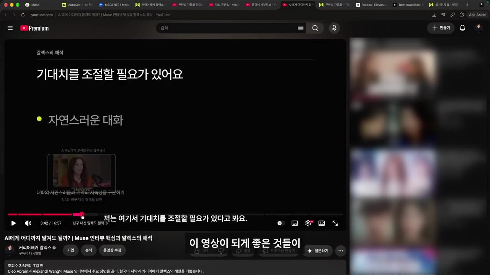
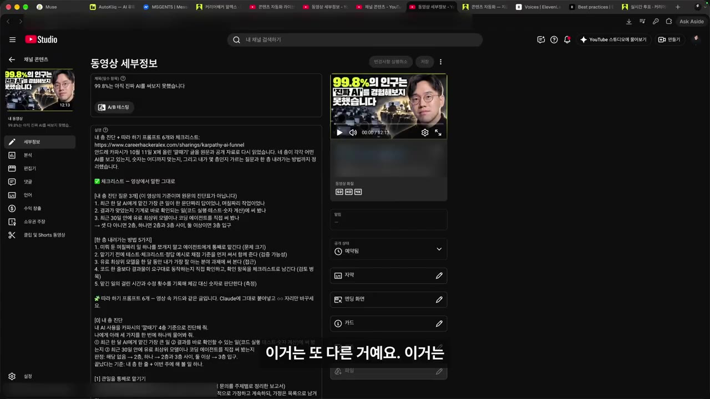
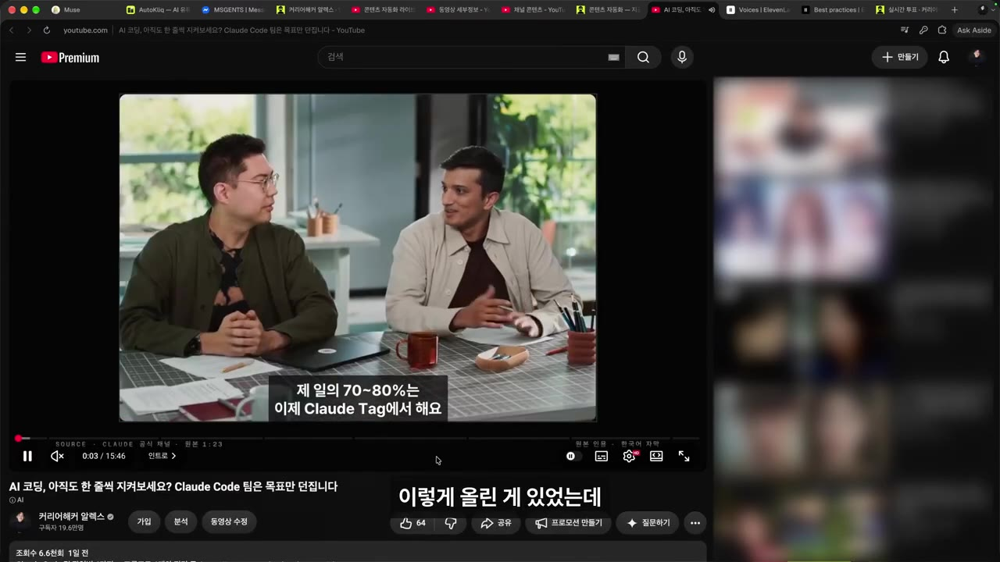
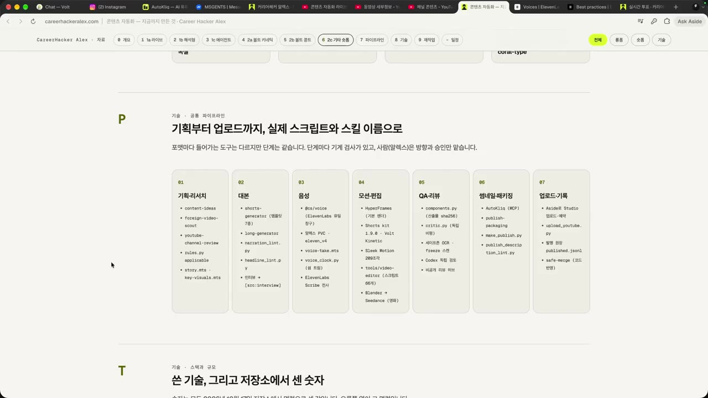
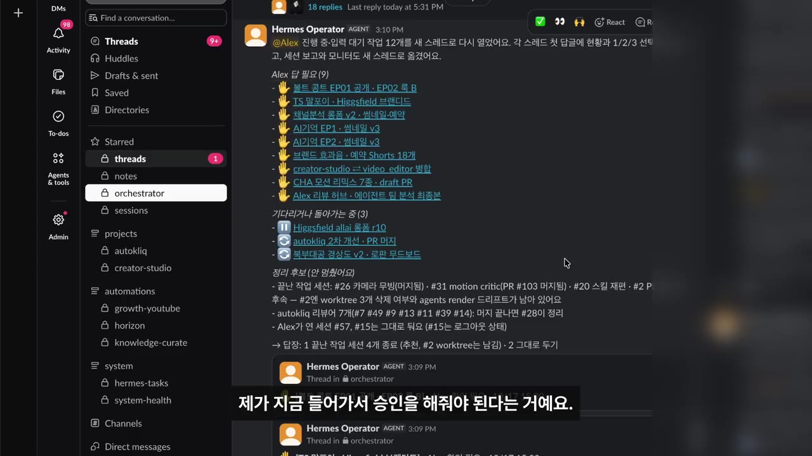

한눈에 보기
- 처음엔 영상 하나에 30시간 걸렸지만, 지금은 라이브 1편을 Claude에 통째로 넘기고 편수까지 맡겨 롱폼 5편·Shorts 22편을 만든다.
- 남의 인터뷰 영상이나 X 글은 번역하지 않고, Claude가 나를 인터뷰하게 해서 내 해석을 더한 2차 가공 영상으로 만든다.
- 남의 영상에서 좋아요 1위 댓글("말 말고 보여 줘")에 답하는 후속 영상을 만들면 원본보다 나은 콘텐츠가 나올 수 있다.
- 기획·리서치 → 대본 → 음성 → 모션·편집 → QA → 패키징 → 업로드의 공통 파이프라인을 만들고, 편집 규칙은 모두 스킬로 정리해 둔다.
- 사람이 병목이 되지 않도록 크레딧 상한·체크 지점 같은 규칙만 정하고 나머지는 에이전트에 맡긴다(Human on the loop).
이런 분께 도움이 됩니다
- 편집이 귀찮아 영상을 못 올리는 1인 크리에이터: 촬영 한 번으로 여러 편을 뽑는 흐름을 얻을 수 있다.
- AI 에이전트로 콘텐츠 제작을 자동화하려는 사람: 단계별 도구와 사람이 확인할 지점을 어떻게 설계하는지 볼 수 있다.
핵심 내용
핵심 주장: 이제 크리에이터는 '재료'만 만들면 된다
- 소스·메시지·콘텐츠만 있으면, 그것을 게시할 수준으로 가공하는 데는 거의 품이 들지 않는다. (0:23)
- 예전: 컨셉·주제 정하기 → 대본 → 읽기 연습 → 리허설 → 촬영 → 재촬영 → 편집으로 영상 하나에 약 30시간.
- 지금: 라이브 1편을 Claude에 던지고 "몇 편 만들지 너가 알아서 정해"라고만 함 → 롱폼 5편, Shorts 약 20~22편.
- 롱폼마다 썸네일도 알아서 만들게 했고, 휴대폰으로 지시만 하고 직접 손대지 않았다.
- 그래서 앞으로는 라이브를 더 많이 할 계획이다. 준비 없이 날것 그대로 보여 주면 편집은 알아서 되기 때문. (5:00)
- 예전엔 "편집 언제 하지?" 때문에 영상을 못 만드는 딜레마가 있었지만, 지금은 라이브 중에 "이건 쇼츠각, 이건 롱폼"을 떠올리며 즐겁게 한다.
💡 날것의 재료가 많을수록 쓸 것도 많아진다 — 후작업은 더 이상 고민거리가 아니다.
남의 콘텐츠에 내 해석을 더하는 2차 가공
- 남의 롱폼을 클립으로 쓰고 내 견해를 더한 2차 가공 영상을 4편 만들었다.
- 인터뷰 영상(Muse 관련 대담): 번역+자막만 달 수도 있었지만, 그러면 번역기 돌리는 것과 차이가 없다고 판단. (1:46)
- Claude에게 "이 영상을 본 사람으로서 재해석한다면 사람들이 궁금해할 것을 질문으로 뽑아 나를 인터뷰해라"라고 시킴.
- 소감·발언에 대한 의견을 말로 쭉 답한 뒤 "롱폼 만들어라" → 보이스·자막·모션 그래픽까지 입힌 롱폼 완성.
- 결과: 조회수 26,000회. 다만 분석해 보니 본인이 말하는 구간에서 시청자가 이탈해, 그냥 만드는 게 아니라 더 잘 만들어야 한다는 피드백을 얻었다.

- X(트위터) 글 해설 영상: 안드레이 카파시의 "99.8%의 사람은 아직 진짜 AI를 써보지 못했다"는 글을 분석하고 의견을 더해 영상으로 만듦. (3:58)
- 글을 해설하는 영상이라 목소리보다 비주얼로 어떻게 풀어내는지가 더 중요 → 인포그래픽·차트·모션 그래픽을 많이 씀.

- 차별화의 핵심: 번역+자막+자동 클립(자막상 "오퍼스")은 누구나 할 수 있다. 메타 엔지니어, AI 서비스·에이전트 메모리 개발자로서의 관점과 쉬운 설명, 자기 목소리를 얹어야 차별성이 생긴다.
💡 자동화로 누구나 만들 수 있는 부분이 아니라, 내 관점과 목소리가 차별점이다.
좋아요 1위 댓글로 만든 후속 영상
- Claude Code 팀 엔지니어들이 일하는 방식을 다룬 영상의 댓글을 분석했다. (6:46)

- 좋아요 503개로 1위인 댓글: "계속 떠드는데 프롬프트도, 에디터도, 코드도 없다" → 요지는 "말 말고 보여 줘".
- 그래서 "이분들이 에디터·코드·프롬프트를 보여 줬다면 어땠을까"를 직접 만든 영상을 올렸다. (7:15)
💡 원본 영상의 댓글을 보면 원본보다 더 좋은 콘텐츠를 만들 수 있다.
편집·모션까지 맡길 수 있는 이유: 규칙을 스킬로 깎아 두기
- 라이브 하나만 던지면 컷 편집·모션 그래픽까지 알아서 되는 이유는 규칙을 스킬(Claude가 따르는 작업 지침 문서)로 많이 만들어 두었기 때문이다. (8:00)
- 컷 편집: 아무렇게나 자르면 안 되고, 목소리·자막·"이건 잘라 줘" 같은 발언을 LLM으로 판단해 자르는 규칙을 스킬로 만듦.
- 모션 그래픽: '볼트 키네틱'이라는 디자인 스킬 — 텍스트 렌더링 방식, 텍스트가 갈 곳과 가면 안 될 곳, 차트를 넣는 조건, 영상당 모션 그래픽 개수 등을 정해 둠.
- 본인의 디자인 시스템·차트 규칙도 스킬로 정리.
💡 자동화의 핵심은 도구가 아니라, 반복되는 판단을 문서(스킬)로 만들어 두는 것이다.
콘텐츠 자동화 파이프라인 (Shorts·롱폼 공통)
- 기획·리서치
- 대본
- 음성
- 모션·편집
- QA(검수)
- 패키징
- 업로드
- 1기획·리서치
사람들이 관심 갖고 열광하는 주제와 포맷을 리서치시킨다. 벤치마킹하되 그대로 베끼지 않고 포맷·스타일만 살려 내 색깔과 의견을 입힌다. (8:55)
- 2대본
큰 틀과 스토리보드를 짜되 본인 말투를 많이 가져오게 한다. Shorts는 대본이 나쁘면 살아남기 어렵다.
- 3음성
본인 목소리를 쓴다. 이것만으로 확실한 차별점이 생긴다.
- 4모션·편집
HyperFrame(HTML 코드로 영상을 만드는 스킬)을 주로 쓰고, 영화 같은 영상은 Blender로 동작을 결정적으로 만들어 실수를 줄인다.
- 5QA(검수)
Claude가 만들면 Codex가, Codex가 만들면 Claude가 검증하는 독립 검토를 둔다.
- 6패키징
썸네일·제목. 이게 안 되면 아무리 좋은 영상도 안 될 때가 많아 가장 중요할 때도 있다.
- 7업로드
업로드 도구(자막상 "어사이드")로 업로드한다.
- HyperFrame은 "기억으로는" Heizen(자막상 불분명) 회사가 만든 스킬이라고 설명했다.
- 이 파이프라인 화면을 스크린샷으로 찍어 Claude에게 "나도 할 수 있을까?"라고 물어보면 거의 해 줄 가능성이 높다고 권했다. 다만 디테일이 중요하다.

사용하는 도구
| 용도 | 도구 (자막 기준) |
|---|---|
| 에이전트·작성·검증 | Claude Code, Codex |
| 모션·렌더 | HyperFrame, Remotion("리모션", HyperFrame과 비슷한 렌더 도구), Blender |
| 음성 | ElevenLabs("11랩스") |
| 영상 생성 | Higgsfield, C-Dance(자막상 불분명) |
| 썸네일 | 자막상 "오토클릭"(본인이 만드는 썸네일 서비스로 보임, 자막상 불분명) |
| 업로드 | 자막상 "어사이드"(자막상 불분명) |
| 배경음악 | 자막상 "순어"(자막상 불분명) |
| 비디오 편집 | 자막상 "FM 팩"(자막상 불분명) |
| 관리 | 규칙 시스템으로 하네싱, 발행 원장(업로드 이벤트 기록) |
사람이 병목이 되지 않게: Human on the loop
- 쇼츠 5개, 롱폼 3개, 모션 그래픽 수정, 웹사이트 수정, 하네스 수정을 여러 에이전트로 동시에 돌리자 본인이 병목이 되었다. 곳곳에서 "승인을 기다립니다, 지시해 주세요"가 뜬다. (12:04)

- 깨달은 점: 이래서는 규모를 키울 수 없다 → 피드백을 줄 때마다 그것을 스킬·룰·하네스로 만들어 승인 요청을 최소화한다.
- 에이전트에 최대한 많은 권한을 주되, 막아야 할 곳은 정확히 설계한다(거버넌스). (13:00)
- Higgsfield를 최대 설정으로 쓰면 크레딧이 바로 다 나간다 → Shorts 1편 최대 500 크레딧, 롱폼 최대 1,500 크레딧으로 상한.
- 캐릭터를 생성하면 영상 만들기 전에 반드시 사람의 확인을 받게 함.
- 그 외에는 사람이 개입해 일을 멈추는 일이 없게 설계.
- 자막에서는 "Human Under Loop"로 들리지만, 영상 설명에는 Human on the loop로 적혀 있다.
💡 내가 없어도 굴러가야 시스템이다 — 확인 지점은 꼭 필요한 곳에만 둔다.
정리: 세 가지 자동화 방식
- 라이브 1편 → 롱폼 5편 + Shorts 22편.
- 남의 롱폼·X 글 → 내 해석을 더한 2차 가공 롱폼.
- 논문을 읽고 내 스타일·목소리로 강의 영상 만들기(마무리에서 짧게만 언급). (13:59)
따라 해보기
준비물
- Claude(또는 Claude Code) 계정. 영상 수준까지 하려면 ElevenLabs·Higgsfield 등 유료 도구가 추가로 든다.
- 내 라이브·강의·회의 녹화본과 그 자막(전체 텍스트).
- 2차 가공할 남의 영상 자막 또는 X 글, 댓글과 좋아요 수.
- 소요 시간: 프롬프트로 기획안까지는 1~2시간. 실제 자동 편집 파이프라인 구축은 영상에 시간이 나오지 않음.
단계별 방법
- 재료 만들기
- 편수 맡기기
- 해석 더하기
- 댓글로 후속 기획
- 규칙 스킬화
- 파이프라인 표
- 개입 지점 정하기
- 1재료 만들기
준비 없이 라이브(또는 강의·회의)를 녹화하고 전체 자막을 뽑는다. (4:43)
- 2편수 맡기기
자막을 Claude에 통째로 넘기고 몇 편으로 나눌지 직접 판단하게 한다. 아래 '2단계에 입력할 내용' 사용.
- 3해석 더하기
남의 영상 자막을 주고 Claude가 나를 인터뷰하게 한 뒤, 내 답만으로 롱폼 개요를 만든다. 아래 '3단계에 입력할 내용' 사용.
- 4댓글로 후속 기획
남의 영상 댓글과 좋아요 수를 주고, 좋아요가 많은 요청 3개에 답하는 기획안을 만든다(설명란 실습 프롬프트 4/7).
- 5규칙 스킬화
매번 같은 형식으로 만드는 작업의 자르기·자막 위치·차트 조건·검사 목록을 SKILL.md 초안으로 정리시킨다(설명란 실습 프롬프트 5/7).
- 6파이프라인 표
이 영상의 파이프라인 화면을 캡처해 Claude에게 "나도 할 수 있을까?"를 묻고, 이번 주에 자동화할 단계 2개를 고른다(설명란 실습 프롬프트 6/7).
- 7개입 지점 정하기
크레딧 상한(예: Shorts 500·롱폼 1,500)과 반드시 사람이 확인할 지점(예: 캐릭터 생성 후)만 규칙으로 정한다. 크레딧 값은 내 요금제에 맞게.
2단계에 입력할 내용 (설명란 실습 프롬프트 1/7 원문)
아래는 제가 진행한 ○○ 라이브(또는 강의·회의 녹화)의 전체 자막입니다. 이 자막만으로 따로 볼 만한 롱폼과 Shorts를 몇 편 만들 수 있는지 직접 판단해 주세요. 편마다 ① 제목 ② 원본 구간(시작–끝 시각) ③ 첫 문장 ④ 시청자가 얻는 것 한 줄을 표로 정리하고, 같은 이야기가 두 편에 겹치지 않게 해 주세요. 완료 기준: 모든 구간이 자막의 실제 시각과 맞고, 각 편이 앞뒤 맥락 없이도 이해됩니다. [자막 붙여넣기: ○○]
3단계에 입력할 내용 (설명란 실습 프롬프트 2/7 원문)
아래는 ○○ 영상의 자막입니다. 저는 이 영상을 그대로 번역하지 않고, 제 해석을 담은 해설 영상을 만들려고 합니다. 이 영상을 본 시청자가 가장 궁금해할 질문 8개를 뽑아 저를 인터뷰해 주세요. 한 번에 한 질문만 묻고, 제 답을 들은 뒤 다음 질문으로 넘어가 주세요. 인터뷰가 끝나면 제 답만으로 10분 롱폼 개요(도입·본론 세 부분·마무리)를 써 주세요. 완료 기준: 원본의 주장과 제 의견이 구분되어 있고, 원본을 그대로 옮긴 문장이 없습니다. [자막 붙여넣기: ○○]
따라 할 수 있는지 점검
- ✅ 바로 따라 할 수 있음: 2·3·4·6단계는 설명란 프롬프트 원문을 붙여 넣으면 기획안·개요·표까지 바로 얻을 수 있다.
- ⚠️ 1단계 「재료 만들기」: 녹화본에서 자막을 뽑는 방법이 영상에 안 나온다 → 유튜브 라이브라면 YouTube Studio의 자동 자막을 내려받거나, 음성 받아쓰기 도구를 쓴다(보충).
- ⚠️ 2단계 「편수 맡기기」: 영상에서는 Claude가 실제 컷 편집·렌더까지 했지만, 그건 직접 만든 스킬과 도구 연결이 있어야 가능하다 → 프롬프트만으로는 '편 나누기 기획표'까지만 나온다.
- ⚠️ 5단계 「규칙 스킬화」: 알렉스의 컷 편집 스킬·'볼트 키네틱' 스킬 원문은 공개되지 않았다 → 내 예시 영상과 메모로 직접 초안을 만들어야 한다.
- ⚠️ 영상 제작 단계 전반: ElevenLabs(목소리 복제), Higgsfield(크레딧제), Claude Code 등 유료 서비스가 필요하다 → 각 공식 사이트에서 요금제를 확인.
- ❓ 썸네일·업로드·배경음악·편집 도구 이름이 자막에서 불분명하다("오토클릭", "어사이드", "순어", "FM 팩") → 영상 11:12 이후 화면에서 도구 목록 확인.
- ❓ 설명란 실습 프롬프트 7/7(크레딧 상한 규칙)은 원문이 중간에서 잘려 있다 → 설명란 원문 확인.
확인 방법
- 2단계 결과표의 원본 구간이 자막의 실제 시각과 맞고, 각 편이 앞뒤 맥락 없이 이해되는지 본다.
- 3단계 개요에서 원본의 주장과 내 의견이 구분되어 있고, 원본을 그대로 옮긴 문장이 없는지 본다.
막히면
- 내가 말하는 구간에서 시청자가 이탈할 수 있다 → 시청 지속 그래프를 보고 내 해설 구간을 짧고 보여 주는 방식으로 다듬는다.
- 남의 영상을 그대로 벗겨 올리는 건 실제로 문제가 되고 있다 → 포맷·스타일만 살리고 내 의견과 색깔을 입힌다.
- 승인 요청이 계속 쌓이면 → 같은 피드백을 두 번 주지 않도록 스킬·룰로 만든다.
기억할 숫자·인용
- 30시간: 유튜브 시작 초기 영상 1편 제작 시간.
- 라이브 1편 → 롱폼 5편 + Shorts 22편(초반엔 "20개인가?"라고 말함).
- 2차 가공 영상 4편, 그중 Muse 인터뷰 해설 영상 조회수 26,000회.
- 99.8%: 카파시가 말한 "아직 진짜 AI를 써보지 못한 사람"의 비율.
- 503개: Claude Code 팀 영상 1위 댓글("말 말고 보여 줘")의 좋아요 수.
- 크레딧 상한: Shorts 500, 롱폼 1,500(알렉스의 값).
- "중요한 거는 재료를 만드는 일밖에 없다."
- "제가 없이도 굴러가야 시스템이 돌아가잖아요."
생각해볼 점
- (영상 내용) 퀄리티가 "나쁘지 않다"고 했지만, 본인 해설 구간에서 이탈이 생겼다고 스스로 밝혔다. (내 의견) 편수가 많아지는 것과 영상 하나하나의 성과는 따로 확인해야 한다.
- (내 의견) 남의 영상 클립을 쓰는 2차 가공은 해석을 더해도 저작권·공정 이용 문제가 남을 수 있다. 원본 사용 범위는 별도로 확인하는 게 안전하다.
- (내 의견) 이 결과는 직접 만든 스킬·디자인 시스템·썸네일 서비스가 있어서 가능했다. 처음 시작하는 사람은 영상의 결과보다 6단계처럼 "이번 주 2단계만 자동화"부터 하는 게 현실적이다.
바로 해볼 일
- 최근 녹화한 라이브·강의 1편의 자막을 뽑아, 실습 프롬프트 1/7로 몇 편이 나오는지 표를 받아 보기
- 관심 분야 인기 영상 1개의 댓글을 좋아요순으로 모아 후속 영상 기획안 3개 받아 보기
- 반복해서 Claude에게 주는 피드백 하나를 골라 규칙 문서(SKILL.md 초안)로 적어 두기